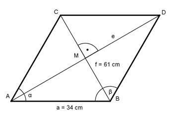

Aufgabe 48 Wie groß ist die Diagonale e der Raute?

Die Seiten einer Raute sind gleich lang. Die Diagonalen e und f stehen senkrecht aufeinander und halbieren sich und die Winkel der Raute. Im Dreieck ABM: f/2 61/2 cm sin α/2 = ----- = ----------- = 0,8971 a 34 cm --> α/2 = 63,8° |*2 α = 127,6° e/2 cos α/2 = ----- |*a a e/2 = a * cos α/2 | *2 e = 2 * a * cos α/2 e = 2 * 34 cm * 0,4415 = 30 cm